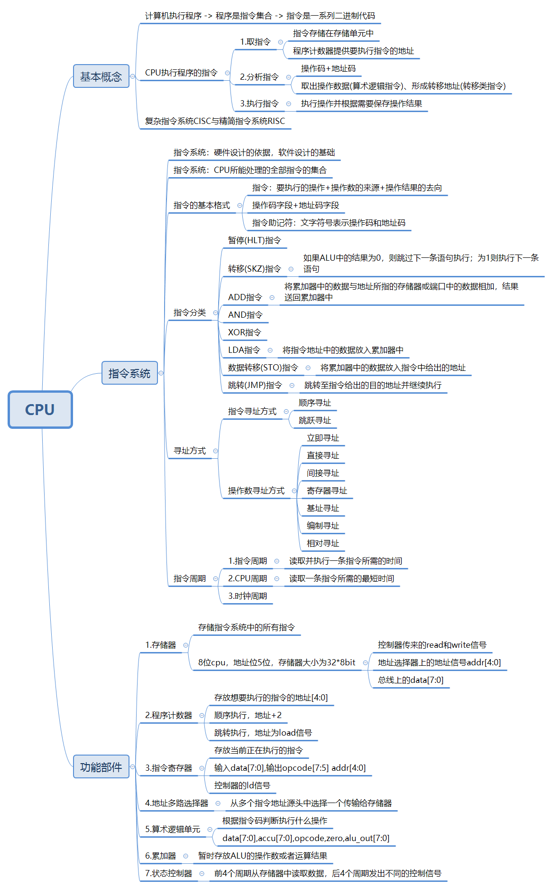

CPU

基本概念
计算机执行程序 -> 程序是指令集合 -> 指令是一系列二进制代码
CPU执行程序的指令
1.取指令
指令存储在存储单元中
程序计数器提供要执行指令的地址
2.分析指令
操作码+地址码
取出操作数据(算术逻辑指令)、形成转移地址(转移类指令)
3.执行指令
执行操作并根据需要保存操作结果
复杂指令系统CISC与精简指令系统RISC
指令系统
指令系统：硬件设计的依据，软件设计的基础
指令系统：CPU所能处理的全部指令的集合
指令的基本格式
指令：要执行的操作+操作数的来源+操作结果的去向
操作码字段+地址码字段
指令助记符：文字符号表示操作码和地址码
指令分类
暂停(HLT)指令
转移(SKZ)指令
如果ALU中的结果为0，则跳过下一条语句执行；为1则执行下一条语句
ADD指令
将累加器中的数据与地址所指的存储器或端口中的数据相加，结果送回累加器中
AND指令
XOR指令
LDA指令
将指令地址中的数据放入累加器中
数据转移(STO)指令
将累加器中的数据放入指令中给出的地址
跳转(JMP)指令
跳转至指令给出的目的地址并继续执行
寻址方式
指令寻址方式
顺序寻址
跳跃寻址
操作数寻址方式
立即寻址
直接寻址
间接寻址
寄存器寻址
基址寻址
编制寻址
相对寻址
指令周期
1.指令周期
读取并执行一条指令所需的时间
2.CPU周期
读取一条指令所需的最短时间
3.时钟周期
功能部件
1.存储器
存储指令系统中的所有指令
8位cpu，地址位5位，存储器大小为32*8bit
控制器传来的read和write信号
地址选择器上的地址信号addr[4:0]
总线上的data[7:0]
2.程序计数器
存放想要执行的指令的地址[4:0]
顺序执行，地址+2
跳转执行，地址为load信号
3.指令寄存器
存放当前正在执行的指令
输入data[7:0],输出opcode[7:5] addr[4:0]
控制器的ld信号
4.地址多路选择器
从多个指令地址源头中选择一个传输给存储器
5.算术逻辑单元
根据指令码判断执行什么操作
data[7:0],accu[7:0],opcode,zero,alu_out[7:0]
6.累加器
暂时存放ALU的操作数或者运算结果
7.状态控制器
前4个周期从存储器中读取数据，后4个周期发出不同的控制信号